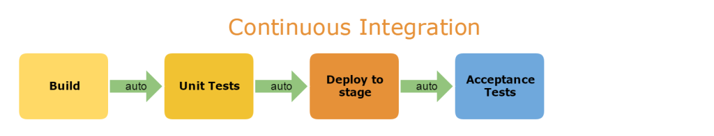
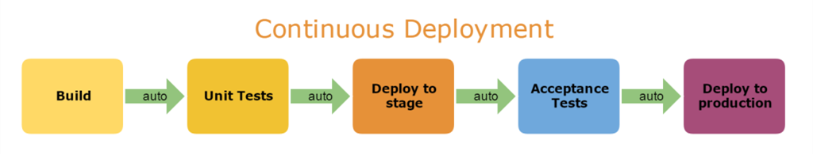

常用词语解释
网络中常用的词语
- TPS
- 解释：系统吞吐量
- PV(Page View)
- 页面浏览量或者点击量；用户每一次对网站中的每个网页访问均被记录1次。用户对同一个页面多次访问，访问量累计。
- UV(Unique visitor)
- 是指通过互联网访问、浏览这个网页的自然人。同一个账户在一台电脑上访问为一个方可。
运维常用词语
CI(Continuous Integration)
解释：持续集成
持续集成是指软件个人研发的部分向软件整体部分交付，频繁进行集成以便更快发现其中的错误。

优点：
- ''快速失败'',在产品没有风险的情况下进行测试，并快速响应。
- 极大限度地减少风险，降低修复错误代码的成本。
- 将重复性的手工流程自动化，让工程师更加专注于代码。
- 保持频繁部署，快速生成可部署的软件
- 提高项目的能见度，方便团队成员了解项目的进度和成熟度。
CD（Continuous Delivery）
- 解释：持续交付
- 持续交付是在持续集成的基础上，将集成后的代码部署到更贴近真实运行环境
持续部署(Continuous Release)
持续部署是指交付的代码通过评审后，自动部署到生产环境中，持续部署是持续交付的最高阶段

QA
- 解释：测试
OPS
- 解释：运维
DEV
- 解释：开发
堡垒机
- 在一个特定的网络环境下，为了保障网络和数据不受来自外部和内部用户的入侵和破坏，而运用各种技术手段实时收集和监控网络环境中每一个组成部分的系统状态、安全事件、网络活动，以便集中报警、及时处理及审计定责。
- 从功能上讲，它综合了核心系统运维和安全审计管控两大主干功能
Keystone
- Keystone(OpenStack Identity Service)是 OpenStack 框架中负责管理身份验证、服务规则和服务令牌功能的模块。也就是身份验证模块。
集群、高并发中的词语
- 计算机集群架构按照功能和结构可以划分为一下几类
- LBC(负载均衡集群，Load balancing clusters)
- HAC(高可用集群，High-availability clusters)
- HPC(高性能计算集群，High-perfomance clusters)
- XFS：高性能日志文件系统
- POD：基本操单元，相关的一个或者多个容器构成一个POD，通常不同的POD里的容器运行相同的应用
- 负载均衡的软件
- LVS(linux virtual server)
- linux虚拟服务器，是一个虚拟的服务器集群系统，可以再unix/linux平台下实现负载均衡集群的功能。
- Nginx
- 作为负载均衡服务器：Nginx 既可以在内部直接支持 Rails 和 PHP 程序对外进行服务，也可以支持作为 HTTP代理服务器对外进行服务。
- HAProxy
- HAProxy是一个使用C语言编写的自由及开放源代码软件[1]，其提供高可用性、负载均衡，以及基于TCP和HTTP的应用程序代理。
- LVS(linux virtual server)
云服务相关名词
“云"其实是互联网的一个隐喻，”云计算“其实就是使用互联网来接入存储或者运行在服务器端的应用、数据、或者服务。
云也是分层的，分别是： Infrastructure(基础设施)-as-a-Service(IaaS)、Platform(平台)-as-a-Service(PaaS)、Software(软件)-as-a-Service(SaaS)。基础设施在最下端，平台在中间，软件在顶端。
IaaS(基础设施即服务)
第一层叫做IaaS，有时候也叫做Hard-as-a-Service,也就是服务器
这一层的作用就是提供虚拟机或者其他资源作为服务提供给用户。
PaaS(平台即服务)
第二层就是PaaS，有时候也叫做中间件。PaaS公司网上提供各种开发和分发应用的解决方案，比如虚拟服务器和操作系统。
这一层的作用是将一个平台作为服务提供给用户
SaaS(软件即服务)
第三层也就是所谓的SaaS。这一层是和我们每一天接触的一层，大多是通过网页浏览器来接入的，任何一个远程服务器上的应用都可以通过网络来运行，就是SaaS。
这一层的作用是将应用作为服务提供给客户。
serverless
serverless并不是不需要服务器，而是你无需关注服务。例如，现在你开发一个应用，不需要关心缓存、mq、web容器,在serverless环境下，你只需要关注代码层面的东西，如果需要用mq，只需要调用函数解决，无需关注mq是否能承受压力。
-
网络中的名词
- ISP(Internet Service Provider)
- 因特网服务提供商，能提供拨号上网服务、网上浏览、下载文件、收发电子邮件等服务，是网络最终用户进入Internet的入口和桥梁。
- ICP（Internet Content Provider）
- 是互联网内容提供商,向广大用户综合提供互联网信息业务和增值业务的电信运营商
- NIC
- 网卡
- XSRF
- Cross site request forgery：跨站请求伪造
- XSS
- Cross site scripting：跨站脚本攻击